Apache Ranger 与 AWS EMR 自动化安装与集成 (3)：Windows AD + EMR-Native Ranger
In this article, we will introduce the solution against “Scenario 2: Windows AD + EMR-Native Ranger”. The same to previous article, we will introduce the soltuion artitecture, give detailed installation step descriptions and verify installed environment. This article address is https://laurence.enlightgram.com/security/ranger-emr-3-ad-native/ , for reprint please indicate the source. This article was initally published at DZone .
1. Solution Overview
1.1 Solution Architecture
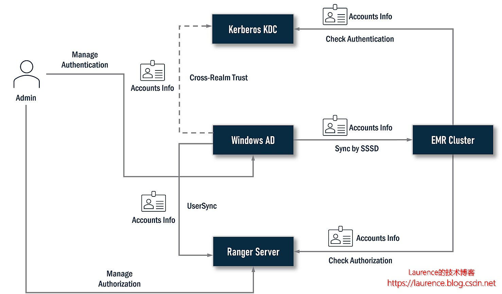
In this solution, Windows AD plays authentication provider, all user accounts data store on it, Ranger plays authorization controller, because we select emr-native ranger solution which strongly depends on Kerberos, so a Kerberos KDC is required. in this solution, we recommend choosing cluster dedicated KDC created by EMR instead of external KDC, this can help us save the job of installing Kerberos. If you have an existing KDC, this solution also support.
To unify user accounts data, Windows AD and Kerberos must be integrated together, the best integration way is one-way cross-realm trust (Windows AD realm trusts Kerberos KDC realm), this is also a build-in feature of EMR. For Ranger, it will sync accounts data from Windows AD so as to grant privileges against user accounts from Windows AD, meanwhile, emr cluster need install a series of ranger plugins, these plugins will check with ranger server to assure if current user has permission to perform an action. And emr cluster will also sync accounts data from Windows AD via SSSD so as a user can login nodes of emr cluster and submit jobs.
1.2 Authentication in Detail
Let’s deep dive into authentication part. Generally, we will finish following jobs, some are done by the installer, some are emr build-in feature, no manual operations.
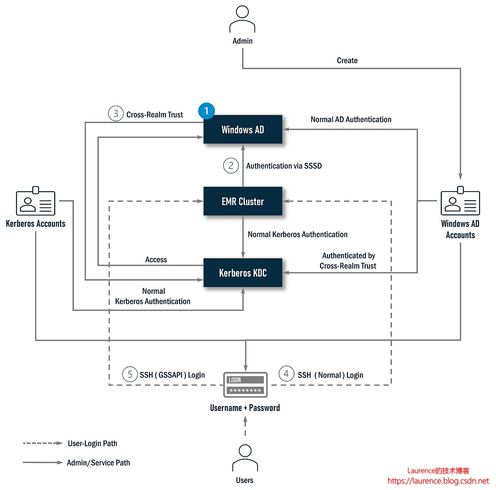
① Install Windows AD;
② Install SSSD on all nodes of emr cluster (If enable cross-realm trust, no manual operations);
③ Enable cross-realm trust (some jobs will be done by as.ps1 file when installing Windows AD, some jobs are will be done when emr cluster creating if cross-realm trust enabled.)
④ Configure SSH, enable users login with Windows AD account (If enable cross-realm trust, no manual operations);
⑤ Configure SSH, enable users login with Kerberos account via GSSAPI (If enable cross-realm trust, no manual operations);
1.3 Authorization in Detail
For authorization, Ranger is absolutely the leading role, if we deep dive into it, its architecture looks as following:
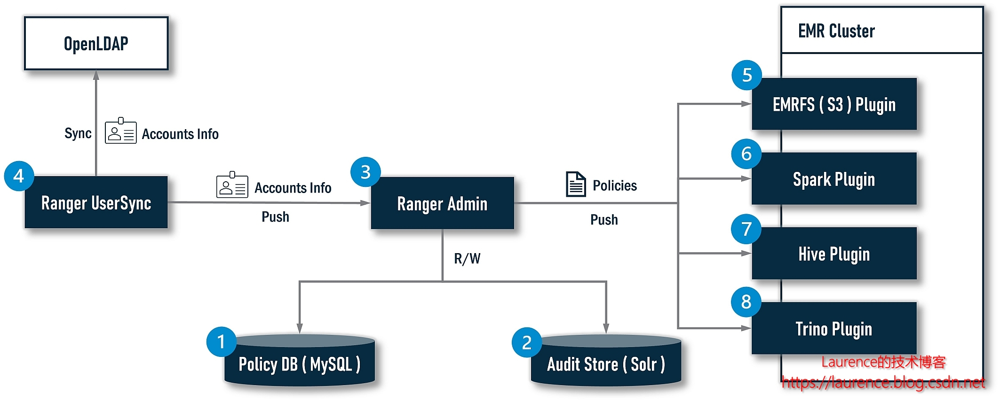
The installer will finish following jobs:
① Install MySQL as Policy DB for Ranger;
② Install Solr as Audit Store for Ranger;
③ Install Ranger Admin;
④ Install Ranger UserSync;
⑤ Install EMRFS(S3) Ranger Plugin；
⑥ Install Spark Ranger Plugin；
⑦ Install Hive Ranger Plugin；
⑧ Install Trino Ranger Plugin (NOT available yet at the time writing)
2. Installation & Integration
Generally, the installation & integration process can be divided into 3 stages: 1. Prerequisites -> 2. All-In-One Install -> 3. Create EMR Cluster, the following diagram illustrates the progress in detail:
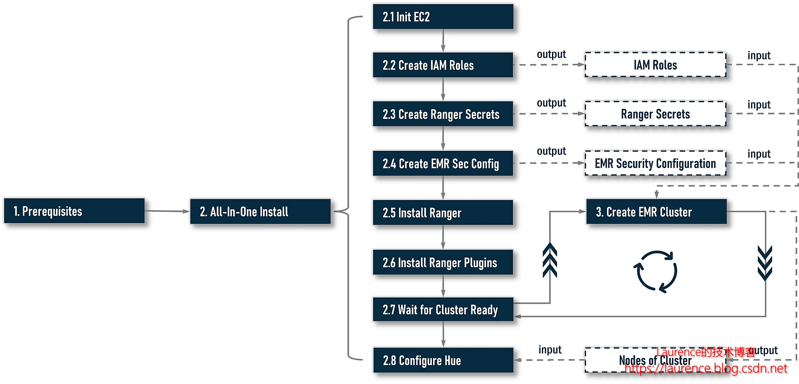
At stage 1, we need do some preparatory work; At stage 2, we start to install and integrate, here are 2 options at this stage: one is all-in-one installation driven by a command -line based workflow, the other is step-by-step installation. For most cases, all-in-one installation is always the best choice, however, sometimes, your installation workflow may be interrupted by unforeseen errors, if you want to continue installing from last failed step, please try step-by-step installation. Or sometimes, you want to re-try a step with different argument values to find the right one, step-by-step is also better choice; At stage 3, we need create an emr cluster by ourselves with output artifacts in stage 2, i.e., iam roles and emr security configuration.
As a design principle, the installer does NOT include any actions to create an emr cluster, you should always create your cluster by yourself, because an emr cluster in practice could have any unpredictable complex settings, i.e., application-specific (hdfs, yarn, etc.) configuration, step scripts, bootstrap scripts and so on, it is unadvised to couple ranger’s installation with emr cluster’s creation.
However, there is a little bit overlapping on execution sequence between stage 2 and 3. When creating an emr cluster based on emr-native ranger, it is required to provide a copy of security configuration and ranger-specific iam roles, they must be available before creating an emr cluster, and besides, during creating cluster, it also need interact with the ranger server (server address is assigned in security configuration); On the other hand, some operations in all-in-one installation need perform on all nodes of cluster or KDC, this requires an emr cluster must be ready. To solve this circular dependency, the installer output some artifacts first depended by emr cluster, then indicate users to create their own cluster with these artifacts, meanwhile, installation progress will be pending, and keep monitoring target cluster’s status, once it’s ready, installation progress will resume and continue to perform rest actions.
Notes：
-
The installer will treat local host as ranger server to install everything of Ranger, for non-ranger operations, it will initiate remote operations via SSH. So, you can just stay on ranger server to execute command lines, no need to switch among multiple hosts.
-
For the sake of Kerberos, all host address must use FQDN, Both IP and hostname without domain name are unaccepted.
2.1 Prerequisites
2.1.1 VPC Constraints
To enable cross-realm trust, a series of constraints are imposed on VPC, before installing, please ensure the hostname of ec2 instance is no more than 15 characters. This is a limitation from Windows AD, however, as aws assigns DNS hostnames based on IPv4 address, this limitation propagates to VPC. If the CIDR of VPC can constraint IPv4 address is no more than 9 characters, the assigned DNS hostnames can be limited within 15 characters. With the limitation, a recommended CIDR setting of VPC is 10.0.0.0/16 .
Although we can change default hostname after ec2 instances available, however, the hostname will be used when the computers join the Windows AD directory, this happened during emr cluster creating, a post modifications on hostname does NOT work(Technically, a possible workaround is to put modifying hostname actions into bootstrap scripts, but we didn’t try it, for changing hostname, please refer to https://docs.aws.amazon.com/AWSEC2/latest/UserGuide/set-hostname.html .
for other cautions, please refer to emr official doc: https://docs.aws.amazon.com/emr/latest/ManagementGuide/emr-kerberos-cross-realm.html#emr-kerberos-ad-network
2.1.2 Create Windows AD Server
In this section, we will create a Windows AD server with powershell scripts. First, create an ec2 instance with Windows Server 2019 Base image (2016 is also tested and supported), then login with Administrator account, download the Windows AD installation scripts file from https://github.com/bluishglc/ranger-emr-cli-installer/releases/download/v2.0/ad.ps1 , save to desktop.
Next, press “Win + R” to open a run dialog, copy following command line and replace parameter values with your own settings:
1 | Powershell.exe -NoExit -ExecutionPolicy Bypass -File %USERPROFILE%\Desktop\ad.ps1 -DomainName <replace-with-your-domain> -Password <replace-with-your-password> -TrustedRealm <replace-with-your-realm> |
The ad.ps1 has pre-defined default parameter values: the domain name is example.com , password is Admin1234! , trusted realm is COMPUTE.INTERNAL . As a quick-start, you can just right-click the ad.ps1 file and select Run with PowerShell to execute it. (Note that you can NOT run this powershell scripts by right-click “Run with PowerShell” on us-east-1, because its default trusted realm is EC2.INTERNAL , so you should set -TrustedRealm EC2.INTERNAL explicitly via above command line.)
After scripts executed, the compute will ask for restarting, this is forced by Windows. We should wait for the computer to restart then re-login as Administrator so as subsequent commands in the scripts file go on executing. Be sure to RE-LOGIN, otherwise a part of scripts have no chance to execute.
After re-login, we can open “Active Directory Users and Computers” from Start Menu -> Windows Administrative Tools -> Active Directory Users and Computers or enter dsa.msc from “Run” dialog to check created AD, if everything goes well, we can get a following AD directory:
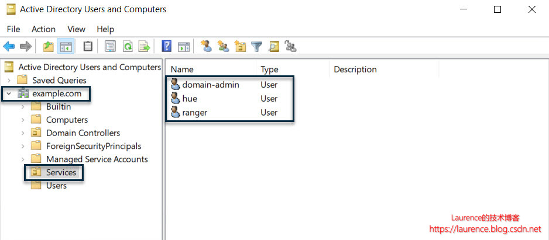
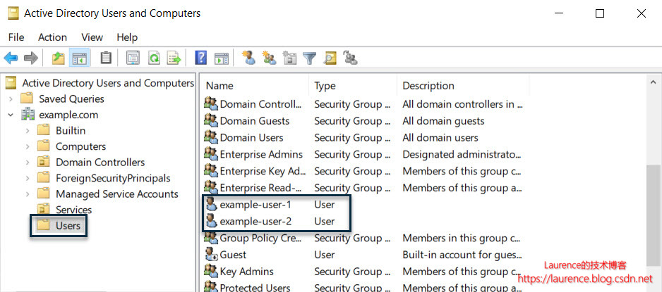
Next, we need check DNS setting, invalid DNS setting will result in installation failure. A common error when running scripts is “Ranger Server can’t solve DNS of Cluster Nodes”, this problem is usually caused by incorrect DNS forwarder setting. We can open “DNS Manager” from Start Menu -> Windows Administrative Tools -> DNS or enter dnsmgmt.msc from “Run” dialog, then open tab “Forwarders”. Normally，there is a record which IP address should be 10.0.0.2 :
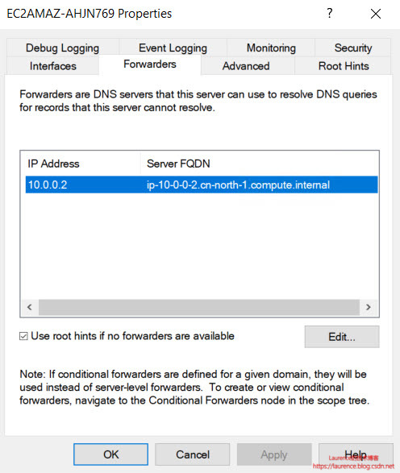
10.0.0.2 is the default DNS server address for 10.0.0.0/16 network in VPC, according to VPC document: https://docs.aws.amazon.com/vpc/latest/userguide/vpc-dns.html , it says:
The Amazon DNS server does not reside within a specific subnet or Availability Zone in a VPC. It’s located at the address 169.254.169.253 (and the reserved IP address at the base of the VPC IPv4 network range, plus two) and fd00:ec2::253. For example, the Amazon DNS Server on a 10.0.0.0/16 network is located at 10.0.0.2. For VPCs with multiple IPv4 CIDR blocks, the DNS server IP address is located in the primary CIDR block.
The forwarder’s IP address usually comes from “Domain name servers” of your VPC’s “DHCP Options Set”, its default value is AmazonProvidedDNS . If you changed it, when creating Windows AD, the forwarder’s IP will become your changed value. It is probably happened when re-install Windows AD in a VPC, if you didn’t recover “Domain name servers” to AmazonProvidedDNS before re-install, the forwarder’s IP is always the address of previous Windows AD server, it may NOT exist anymore, that’s why ranger server or cluster nodes can’t solve DNS. So, we can simply change forwarder IP to default value, i.e., 10.0.0.2 in 10.0.0.0/16 network.
The other DNS related configuration is IPv4 DNS setting, usually, its default setting is OK, just attach it here as reference(in cn-north-1 region):
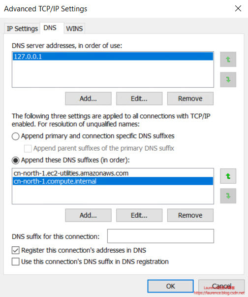
2.1.3 Create DHCP Options Set and Attach To VPC
A cross-realm trust requires that the KDCs can reach one another over the network and resolve each other’s domain names. So it is required to set the Windows AD as DNS server in “DHCP Options Sets” of VPC. The following command line will complete this job ( run following scripts on a Linux host which has installed aws cli ):
1 | # run on a host which has installed aws cli |
The following is a snapshort of created DHCP options from aws web console:
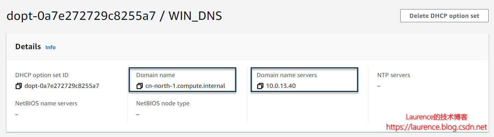
The “Domain name” - cn-north-1.compute.internal will be the “domain name” part of long hostname (FQDN). Usually, for us-east-1 region, please specify ec2.internal ; for other regions, specify <region>.compute.internal . Note that do NOT set the domain name of Windows AD to it, i.e., example.com in our example, they are 2 different things, otherwise the cross-realm trust will fail. The “Domain name server” - 10.0.7.240 is the private IP of the Windows AD server. And the following is a snapshot of VPC which has attached this DHCP options set:
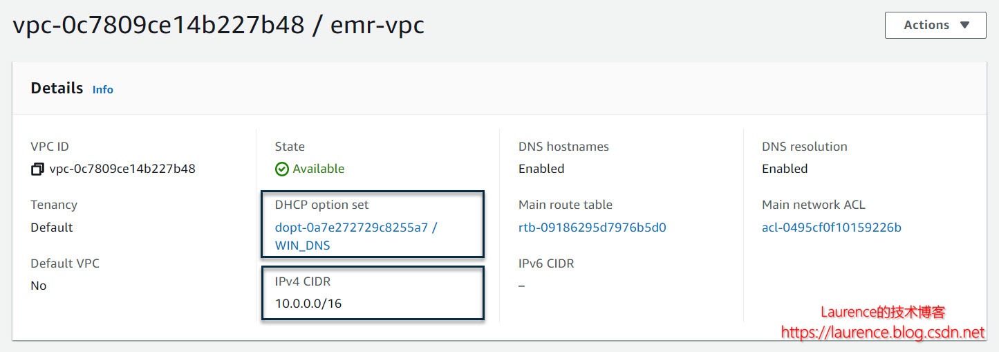
2.1.4 Create EC2 Instances as Ranger Server
Next, we need prepare an EC2 instance as the server of Ranger, please select Amazon Linux 2 image and guarantee network connections among instances and the cluster to be created are reachable.
As a best practice, it’s recommended to add ranger server into ElasticMapReduce-master security group, because Ranger is very close to emr cluster, it can be regarded as a non-emr-build-in master service. For Windows AD, we have to make sure its ports 389 is reachable from ranger and all nodes of emr cluster to be created, or to be simple, you also add Windows AD into ElasticMapReduce-master security group.
2.1.5 Download Installer
After EC2 instances are ready, pick the ranger server, login via ssh, run following commands to download installer package:
1 | sudo yum -y install git |
2.1.6 Upload SSH Key File
As mentioned before, the installer is based on local host (ranger server), to perform remote installing actions on emr cluster, SSH private key is required, so we should upload it to ranger server, and keep the file path, it will be the value of variable SSH_KEY .
2.1.7 Export Environment-Specific Variables
During installing, following environment-specific arguments will be passed more than once, it’s recommended to export them first, then all command lines just refer these variables instead of literals.
1 | export REGION='TO_BE_REPLACED' |
The following is comments of above variables:
-
REGION: Aws Region, i.e., cn-north-1, us-east-1 and so on.
-
ACCESS_KEY_ID: Aws access key id of your IAM account. Be sure your account has enough privileges, it’s better having admin permissions.
-
SECRET_ACCESS_KEY: Aws secret access key of your IAM account.
-
SSH_KEY: Ssh private key file path on local host you just uploaded
-
AD_HOST: FQDN of AD server
-
VPC_ID: The id of VPC
Please carefully replace above variables’ value according to your environment and remember to use FQDN as hostname. The following is a copy of example:
1 | export REGION='cn-north-1' |
2.2 All-In-One Installation
2.2.1 Quick Start
Now, let’s start an all-in-one installation, execute this command line:
1 | sudo sh ./ranger-emr-cli-installer/bin/setup.sh install \ |
For parameters specification of above command line, please refer to appendix. If everything goes well, the command line will execute step from 2.1 to 2.6 in workflow diagram, this may spend 10 minutes or more depending on the bandwidth of your network, then it will suspend and indicate user to create emr cluster with the 2 artifacts:
Ⓐ An ec2 instance profile named EMR_EC2_RangerRole
Ⓑ An emr security configuration named Ranger@<YOUR-RANGER-HOST-FQDN>
They are just created by command line in step 2.2 & 2.4, and you can find them from emr web console when creating cluster. The following is a snapshot of command line for this moment:
![请添加图片描述](https://img-blog.csdnimg.cn/e4ee7e37ef574f04a3ab79ca60fda1a7.jpeg
Next, we should switch to emr web console to create a cluster, be sure to select ec2 instance profile and security configuration prompted in command line console. As for Kerberos & Cross-Realm Trust, please fill and make a note of following items:
-
Realm: the realm of Kerberos, note that for region
us-east-1, default realm isEC2.INTERNAL; for other regions, default realm isCOMPUTE.INTERNAL; you can assign other realm name, but be sure the entered realm name and the trusted realm name passed toad.ps1as parameter are the same value . -
KDC admin password: the password of kadmin.
-
Active Directory domain join user: this is an AD account with enough privileges which can add cluster nodes into windows domain, this is a required action to enable cross-realm trust, emr relies on this account to finish this job. If the Windows AD is installed by
ad.ps1, an account nameddomain-adminwill be automatically created for this purpose, so we fill “domain-admin” here, you can also assign other account, but be sure it is existing and has enough privileges. -
Active Directory domain join password: the password of “Active Directory domain join user”
The following is a snapshot of emr web console for this moment:
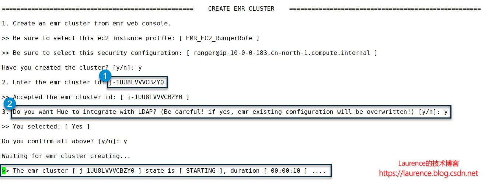
Once the emr cluster starts to create, the cluster id will be certain, we need copy the id, then go back to command line terminal, enter “y” for cli prompt "Have you created the cluster? [y/n]: "(you don’t need wart for the cluster to become completely ready), then the command line will ask you to:
① Enter the cluster id.
② Confirm if let Hue integrate with LDAP or not. if yes, after cluster is ready, the installer will update emr configuration with Hue specific setting, be careful that this action will overwrite emr existing configuration.
Finally, enter “y” to confirm all inputs, the installation process will resume and if assigned emr cluster is not ready yet, the command line will keep monitoring until it goes into “WAITING” status, the following is a snapshot for this moment of the command line:
![image_1gag7jt4n1jvkb0qi311sht7kd32.png-55.1kB][15]
When cluster is ready (status is “WAITING”), the command line will continue to execute step 2.8 of workflow, and end with an “ALL DONE!!” message.
2.2.2 Customization
Now, all-in-one installation is done, next, we introduce more about customization. Generally, this installer follows the principle of “Convention over Configuration”, most parameters are preset by default values, an equivalent version with full parameter list of above command line is as following:
1 | sudo sh ./ranger-emr-cli-installer/bin/setup.sh install \ |
The full-parameters version gives us a complete perspective of all custom options. In following scenarios, you may change some options’ value:
-
If you want to change default organization name
dc=example,dc=comor default passwordAdmin1234!, please run full-parameters version, and replace them with your own values. -
If you need integrate with external facilities, i.e., an existing MySQL, Solr, please add corresponding
--skip-xxx-xxxoptions and set ittrue. -
If you have other pre-defined bind dn for hue, ranger and sssd, please add corresponding
--xxx-bind-dnand--xxx-bind-passwordoptions to set them. Note that the bind dn for hue, ranger and sssd will be created automatically when installing Windows AD, but they are FIXED with naming patterncn=hue|ranger|sssd,ou=services,<your-base-dn>not the given value of “–xxx-bind-dn” option, so if you assign other dn with “–xxx-bind-dn” option, you MUST create this dn by yourself in advance. The reason this install does NOT create the dn assigned by “–xxx-bind-dn” option is that a dn actually is a tree path, to create it, we must create all nodes in the path, it is not cost-effective to implement such small but complicated function. -
All-in-one installation will update emr configuration for Hue so as users can login Hue with Windows AD accounts, if you have other customized emr configuration, please append
--skip-configure-hue 'true'in command line to skip updating configuration, then manually append hue configuration into your json, otherwise your pre-defined configuration will be overwritten.
2.3 Step-By-Step Installation
As an alternative, you can also select step-by-step installation instead of all-in-one installation. we give the command line of each step, as for comments for each parameter, please refer to appendix.
2.3.1 Init EC2
This step will finish some fundamental jobs, i.e., install aws cli, jdk, and so on.
1 | sudo sh ./ranger-emr-cli-installer/bin/setup.sh init-ec2 \ |
2.3.2 Create IAM Roles
This step will create 3 iam roles which are required for EMR.
1 | sudo sh ./ranger-emr-cli-installer/bin/setup.sh create-iam-roles \ |
2.3.3 Create Ranger Secrets
This step will create SSL/TLS related keys, certificates and keystores for Ranger, because emr-native ranger requires SSL/TLS connections to server. These artifacts will upload to aws secrets manager and referred by emr security configuration.
1 | sudo sh ./ranger-emr-cli-installer/bin/setup.sh create-ranger-secrets \ |
2.3.4 Create EMR Security Configuration
This step will create a copy of emr security configuration, the configuration includes Kerberos and Ranger related information, when creating cluster, emr will read them and get corresponding resources, i.e., secrets, and also interact with the ranger server which address is assigned in the security configuration.
1 | sudo sh ./ranger-emr-cli-installer/bin/setup.sh create-emr-security-configuration \ |
2.3.5 Install Ranger
This step will install all server-side components of Ranger, including MySQL, Solr, Ranger Admin and Ranger UserSync.
1 | sudo sh ./ranger-emr-cli-installer/bin/setup.sh install-ranger \ |
2.3.6 Install Ranger Plugins
This step will install emrfs, spark and hive plugins from ranger server side. There is the other half job which install these plugins (actually they are EMR Secret Agent, EMR Record Server and so on) on agent side, however, it will be done automatically by emr when creating cluster.
1 | sudo sh ./ranger-emr-cli-installer/bin/setup.sh install-ranger-plugins \ |
2.3.7 Create EMR Cluster
For step-by-step installation, there is no interactive process for creating emr cluster, so just feel free to create cluster on emr web console. but we have to wait for the cluster is completely ready (in “WAITING” status), then export emr cluster id:
1 | export EMR_CLUSTER_ID='TO_BE_REPLACED' |
The following is a copy of example:
1 | export EMR_CLUSTER_ID=' j-1UU8LVVVCBZY0' |
2.3.8 Update Hue Configuration
This step will update hue configuration of emr, as highlighted in all-in-one installation, if you have other customized emr configuration, please skip this step, but you can still manually merge generated json file for hue configuration by command line into your own json.
1 | sudo sh ./ranger-emr-cli-installer/bin/setup.sh update-hue-configuration \ |
3. Verification
After installation & integration is completed, it’s time to check if ranger works or not. The verification jobs are divided into 3 parts which are against hive, emrfs(s3) and spark.
First, let us open ranger web console, the address is: https://<YOUR-RANGER-HOST>:6182 , the default admin account/password is: admin/admin . After login, we should open “Users/Groups/Roles” page first, check if example users on Windows AD are already synchronized to ranger as following:
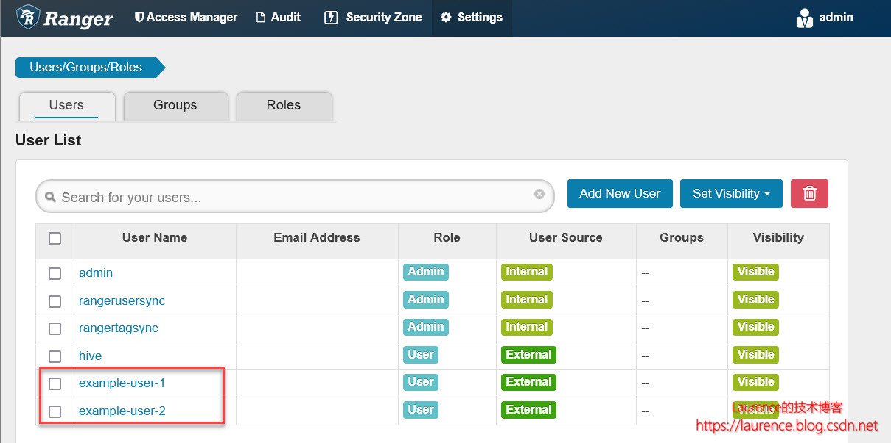
3.1 Hive Access Control Verification
Usually, there are a set of pre-defined policies for hive plugin after installation, to eliminate interference, keep verification simple, let’s REMOVE them first:
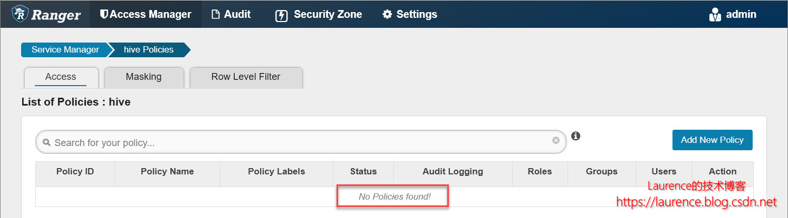
Any policy changes on ranger web console will sync to agent side (emr cluster nodes) within 30 seconds, we can run following commands on master node to check if local policy file is updated:
1 | # run on master node of emr cluster |
Once local policy file is up to date, removing-all-policies action become effective, then login Hue with Windows AD account “example-user-1” created by installer, open hive editor, enter following sql (remember to replace “ranger-test” with your own bucket) to create a test table (change ‘ranger-test’ to your own bucket name):
1 | -- run in hue hive editor |
then, run it and an error occurs:
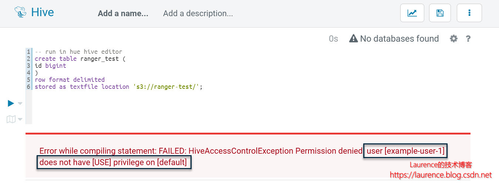
It shows example-user-1 is blocked by database-related permissions, this proves hive plugin is working, then we go back to ranger, add a hive policy named “all - database, table, column” as following:
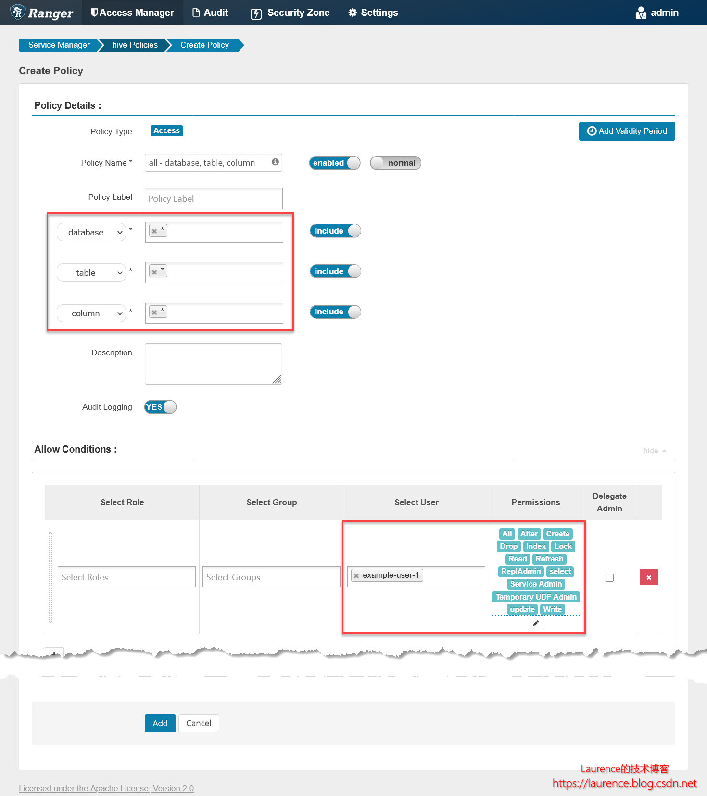
It grants example-user-1 all privileges on all databases, tables and columns, then check policy file again on master node with previous command line, once updated, go back to Hue, re-run that sql, we will get another error at this time:
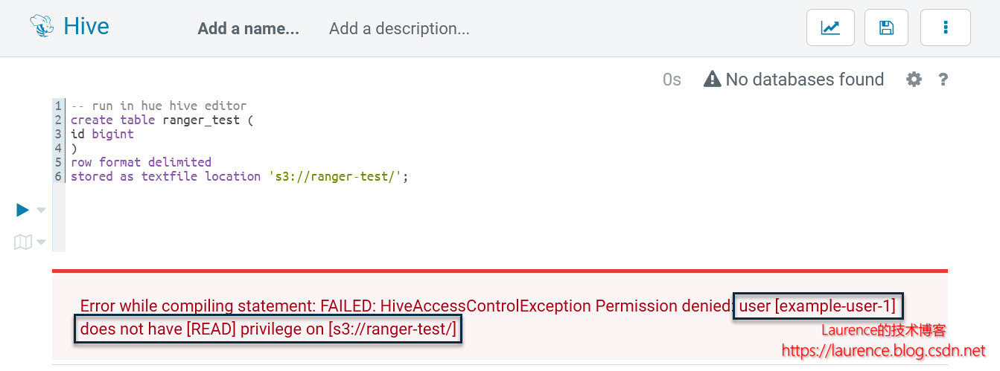
As shown, the sql is blocked when reading “s3://ranger-test”, actually, example-user-1 has no permissions to access any URL, including “s3://”. We need grant url-related permissions to this user, so go back to ranger again, add a hive policy named “all - url” as following:
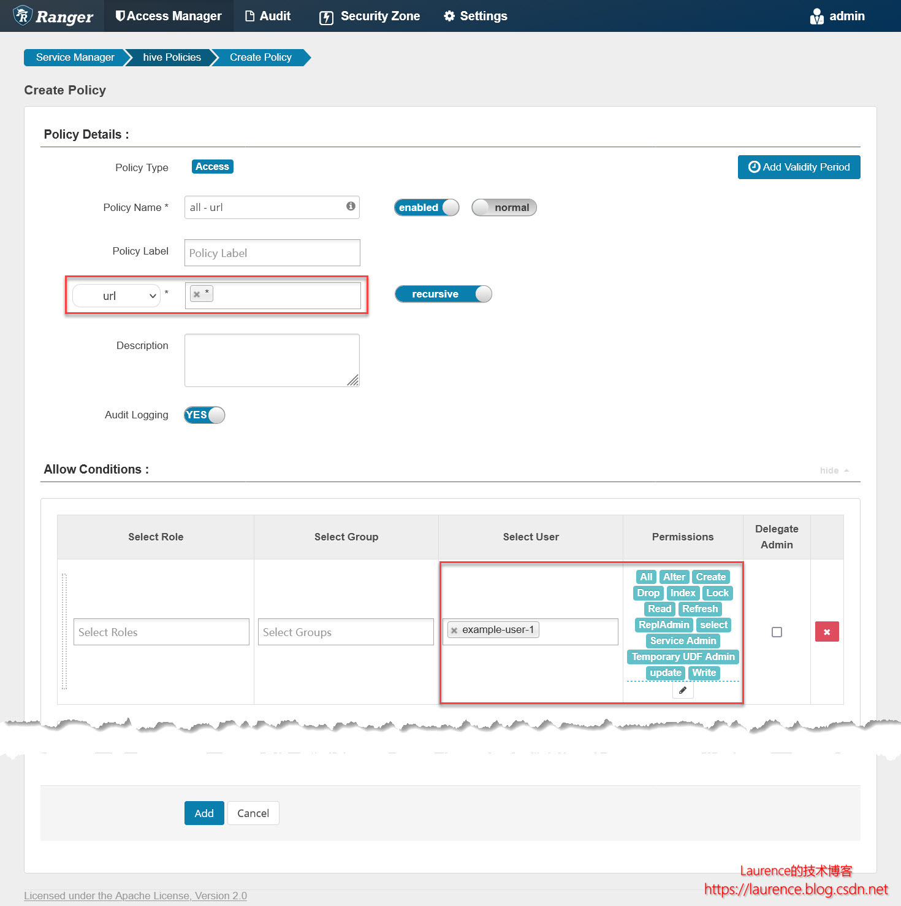
It grants example-user-1 all privileges on any url, including “s3://”, then check policy file again, and switch to Hue, run that sql third time, it will go well as following:
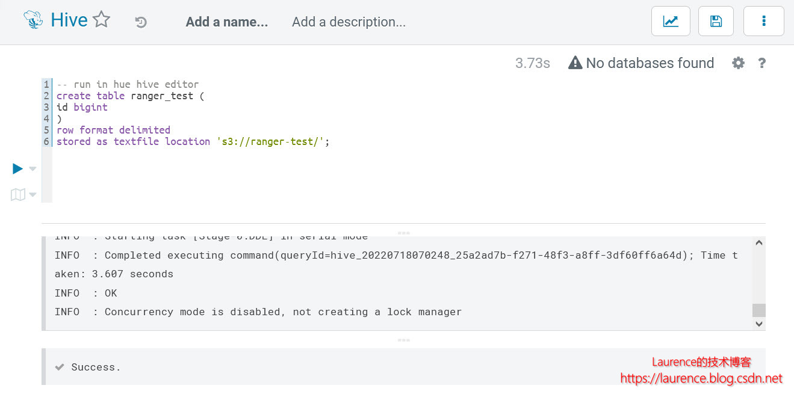
At the end, to prepare for next EMRFS / Spark verification, we need insert some example data into the table, and also double check if example-user-1 has full read & write permissions on the table:
1 | insert into ranger_test(id) values(1); |
The execution result is:
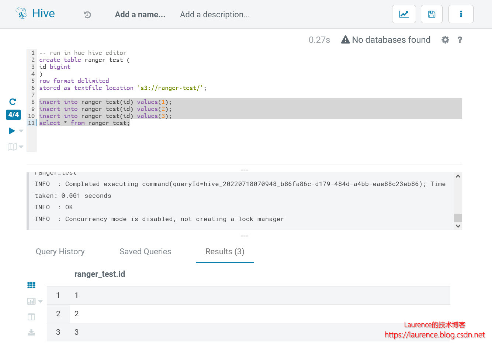
By now, hive access control verifications are passed.
3.2 EMRFS (S3) Access Control Verification
Login Hue with account “example-user-1”, open scala editor, enter following spark codes:
1 | # run in scala editor of hue |
This line of codes try to read files on S3, but it will run into following errors:
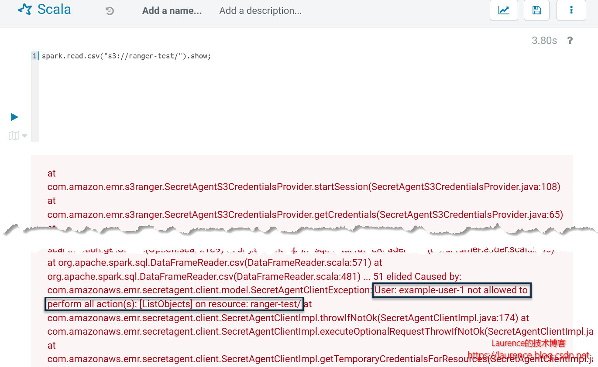
It shows example-user-1 has no permission on s3 bucket “ranger-test”. This proves emrfs plugin is working, it successfully blocked unauthorized s3 access. Let’s login ranger, add an emrfs policy named “all - ranger-test” as following:
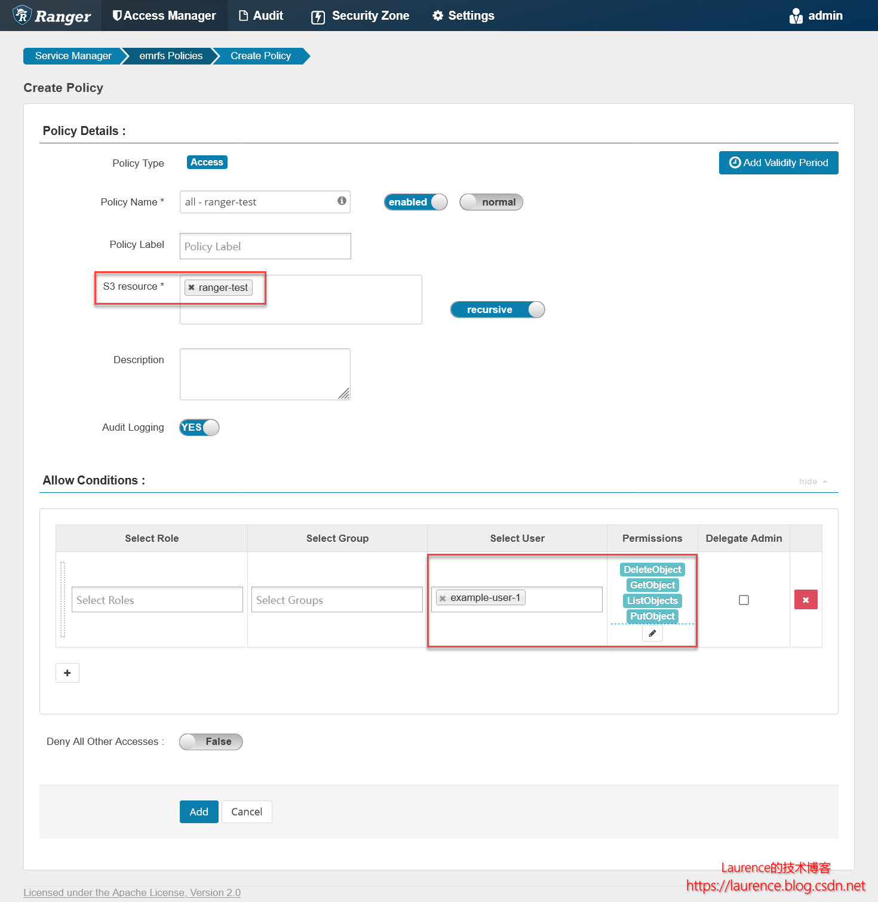
It will grant example-user-1 all privileges on “ranger-test” bucket. Similar to checking hive policy file, we can also run following command to check if emrfs policy file is updated:
1 | # run on master node of emr cluster |
After updated, go back to Hue, re-run previous spark codes, it will succeed as following:
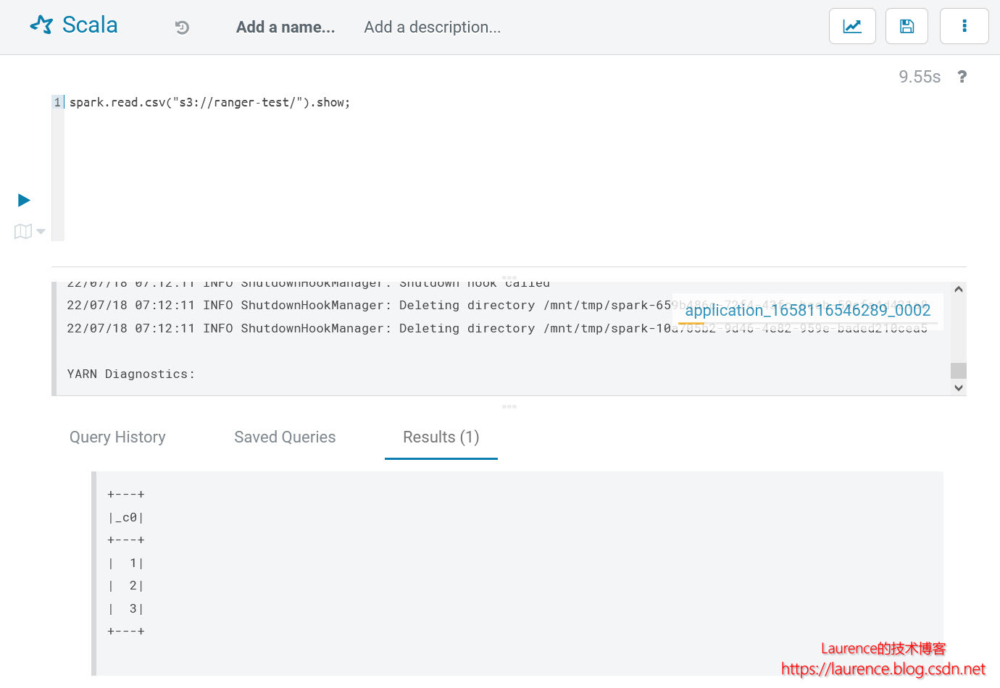
By now, emrfs access control verifications are passed.
3.3 Spark Access Control Verification
Login Hue with account “example-user-1”, open scala editor, enter following spark codes:
1 | # run in scala editor of hue |
This line of codes try to ranger_test table via spark sql, but it will run into following errors:
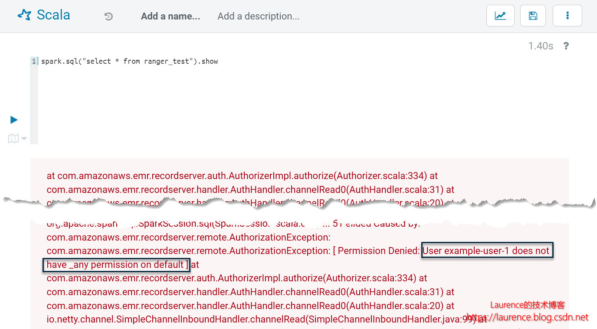
It shows current user has no permission on default database. This proves spark plugin is working, it successfully blocked unauthorized database/tables access.
Let’s login ranger, add a spark policy named “all - database, table, column” as following:
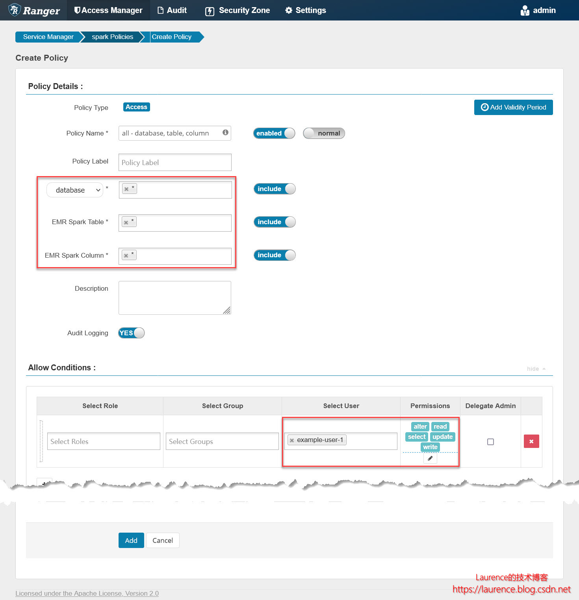
It will grant example-user-1 all privileges on all databases/tables/columns. Similar to checking hive policy file, we can also run following command to check if spark policy file is updated:
1 | # run on master node of emr cluster |
After updated, go back to Hue, re-run previous spark codes, it will succeed as following:
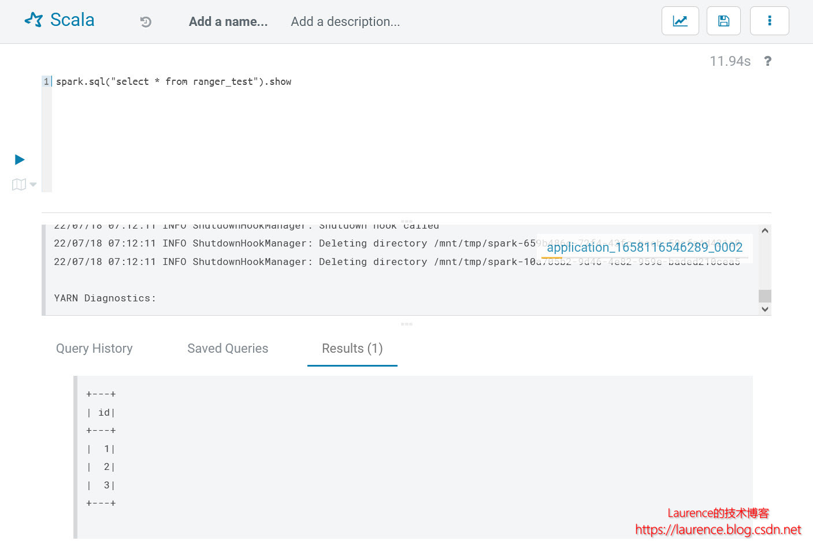
By now, spark access control verifications are passed.
4. Appendix
The following is parameter specification:
| Parameter | Comment |
|---|---|
| –region | the aws region. |
| –access-key-id | the aws access key id of your IAM account. |
| –secret-access-key | the aws secret access key of your IAM account. |
| –ssh-key | the ssh private key file path. |
| –solution | the solution name, accepted values ‘open-source’ or ‘emr-native’. |
| –auth-provider | the authentication provider, accepted values ‘ad’ or ‘openldap’. |
| –openldap-host | the FQDN of openldap host. |
| –openldap-base-dn | the base dn of openldap, for example: ‘dc=example,dc=com’, change it according to your env. |
| –openldap-root-cn | the cn of root account, for example: ‘admin’, change it according to your env. |
| –openldap-root-password | the password of root account, for example: ‘Admin1234!’, change it according to your env. |
| –ranger-bind-dn | the bind dn for ranger, for example: ‘cn=ranger,ou=services,dc=example,dc=com’, this should be an existing dn on Windows AD / OpenLDAP, change it according to your env. |
| –ranger-bind-password | the password of ranger bind dn, for example: ‘Admin1234!’, change it according to your env. |
| –openldap-user-dn-pattern | the dn pattern for ranger to search users on OpenLDAP, for example: ‘uid={0},ou=users,dc=example,dc=com’, change it according to your env. |
| –openldap-group-search-filter | the filter for ranger to search groups on OpenLDAP, for example: ‘(member=uid={0},ou=users,dc=example,dc=com)’, change it according to your env. |
| –openldap-user-object-class | the user object class for ranger to search users, for example: ‘inetOrgPerson’, change it according to your env. |
| –hue-bind-dn | the bind dn for hue, for example: ‘cn=hue,ou=services,dc=example,dc=com’, this should be an existing dn on Windows AD / OpenLDAP, change it according to your env. |
| –hue-bind-password | the password of hue bind dn, for example: ‘Admin1234!’, change it according to your env. |
| –example-users | the example users to be created on OpenLDAP & Kerberos so as to demo ranger’s feature, this parameter is optional, if omitted, no example users will be created. |
| –ranger-bind-dn | the bind dn for ranger, for example: ‘cn=ranger,ou=services,dc=example,dc=com’, this should be an existing dn on Windows AD / OpenLDAP, change it according to your env. |
| –ranger-bind-password | the password of bind dn, for example: ‘Admin1234!’, change it according to your env. |
| –hue-bind-dn | the bind dn for hue, for example: ‘cn=hue,ou=services,dc=example,dc=com’, this should be an existing dn on Windows AD / OpenLDAP, change it according to your env. |
| –hue-bind-password | the password of hue bind dn, for example: ‘Admin1234!’, change it according to your env. |
| –sssd-bind-dn | the bind dn for sssd, for example: ‘cn=sssd,ou=services,dc=example,dc=com’, this should be an existing dn on Windows AD / OpenLDAP, change it according to your env. |
| –sssd-bind-password | the password of sssd bind dn, for example: ‘Admin1234!’, change it according to your env. |
| –ranger-plugins | the ranger plugins to be installed, comma separated for multiple values. for example: ‘emr-native-emrfs,emr-native-spark,emr-native-hive’, change it according to your env. |
| –skip-configure-hue | skip to configure hue, accepted values ‘true’ or ‘false’, dafault value is ‘false’. |
| –skip-migrate-kerberos-db | skip to migrate kerberos database, accepted values ‘true’ or ‘false’, dafault value is ‘false’. |
Related Reading:
Apache Ranger 与 AWS EMR 自动化安装与集成 (3)：Windows AD + EMR-Native Ranger
https://laurence.enlightgram.com/security/ranger-emr-3-ad-native/